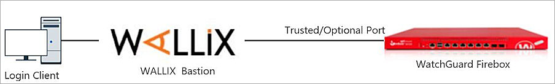
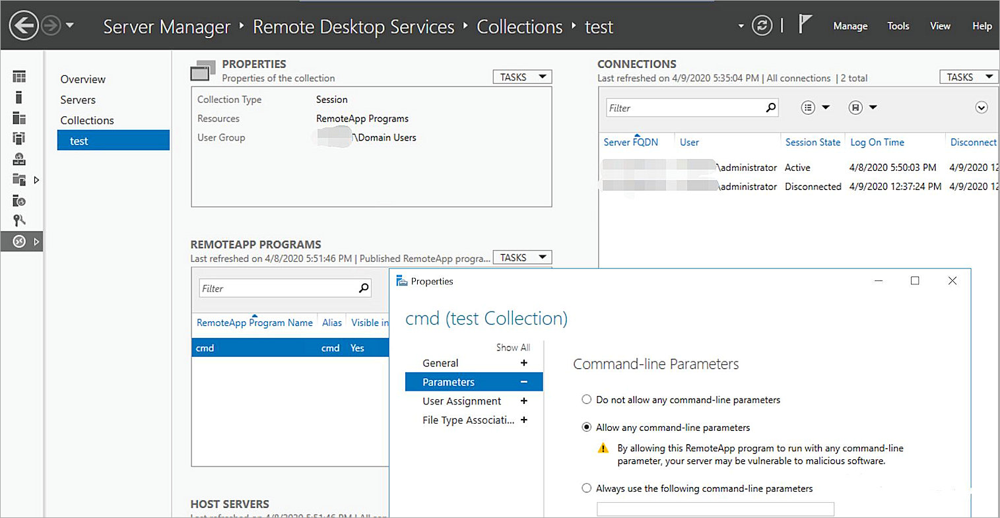

Deployment Overview
WALLIX offers privileged access management solutions for large and medium-sized enterprises, public organizations, and cloud service providers. WALLIX Bastion helps these customers to protect critical IT assets, such as data, servers, terminals and connected devices.
Integration Summary
The hardware and software used in this guide include:
- WALLIX Bastion:
- Version 8.0.1
- WatchGuard Firebox:
- Version 12.5.3.B616762
- Windows Server:
- 2016
Test Topology
This diagram shows the test topology for SSH:

This diagram shows the test topology for the Web UI:

Before You Begin
Before you begin these procedures, make sure that you:
- Install and complete the initial configuration of WALLIX Bastion
- Install and complete the initial configuration of your WatchGuard Firebox
- Install Chrome, Active Directory Domain Services (AD DS), and Remote Desktop Services on your Windows Server
- Allow the user who opens the RDP session on the server access to the collection
- Get the AppDriver.exe and WABChromeLogonUIA.lua files from WALLIX support and save them to your jump server. In this guide we use these file locations:
- C:\AppDriver\AppDriver.exe
- C:\AppDriver\WABChromeLogonUIA.lua
- Publish cmd.exe as a RemoteApp program in Remote Desktop Services and select Allow any command-line parameters in the properties


Configure Your Firebox for WALLIX Bastion
Add two user accounts, clilogin and weblogin, to the Firebox with the Device Administrator role. For instructions on how to add users to the Firebox, see Fireware Help.
Configure WALLIX Bastion with SSH Login
In this guide, we log in to the Firebox via the Trusted or Optional port. The Firebox IP address must be the Trusted or Optional port IP address.
Add a User Group
- Log in to the WALLIX Bastion Web UI.
- Select User > Groups.
- Click Add a group.
- In the Group name text box, type the group name.
- From the Available Users list, select your user, then click the arrow to move the user to the Selected Users list. If you did not configure other users, only the WALLIX Bastion Web UI login user appears in the list.
- Do not change the other default settings.

- Click Apply.

Add an SSH Login Device
- Select Targets > Devices.
- Click + Device.
- In the Name text box, type the device name.
- In the IP address or FQDN text box, type the Firebox IP address.

- Click Apply.
- Select the Services tab.
- Click + Service.
- From the drop-down list, select SSH.
- In the Service name text box, type the service name SSH.
- In the Port text box, type 4118.
- Select all Proxy options check boxes.
- Do not change the other default settings.

- Click Apply and close.

On the Targets page, Devices tab, the Firebox appears in the list of devices.

Add an SSH Login Account
- Select Targets > Accounts > Device accounts.
- Click + Account.
- From the Device drop-down list, select the device you created previously.
- From the New local domain drop-down list, select local.
- In the Account name text box, type the name of a Firebox user account. In this example, we use the clilogin user account. You can also use the default Firebox admin account.
- In the Account login text box, type the same text you typed in the Account name text box.
- Do not change the other default settings.

- Click Apply.
- Select the Password tab.
- In the New password and New password confirmation text boxes, type the password.
- Do not change the other default settings.

- Click Apply
Add an SSH Login Group
- Select Targets > Groups.
- Click + Group.
- In the Name text box, type the group name.

- Click Apply.
- Select the Session management targets tab.
- Under Account, click + Target(s).
- From the From drop-down list, select A device and related local accounts.
- From the Device drop-down list, select the device you created in the Add an SSH Login Device section.
- From the Service drop-down list, select the service you created in Step 9 of the Add an SSH Login Device section.
- In the Local accounts section, select the name of the account you created in Step 5 of the Add an SSH Login Account section.

- Click Add and close.
- Click Interactive login.
Steps 12-17 are optional. - Click + Target(s).
- From the From drop-down list, select A device and related services.
- From the Device drop-down list, select the device you created in the Add an SSH Login Device section.
- In the Services section, select the service you created in Step 9 of the Add an SSH Login Device section.

- Click Add and close.
- Select the Password management targets tab.
- Click + Target(s).
- From the From drop-down list, select A device and related local accounts.
- From the Device drop-down list, select the device you created in the Add an SSH Login Device section.
- In the Local accounts section, select the name of the account you created in Step 5 of the Add an SSH Login Account section.

- Click Add and close.
Configure WALLIX Bastion with Web UI Login
In this guide, we log in to the Firebox via the Trusted or Optional port. The Firebox IP address must be the Trusted or Optional port IP address.
Add an RDP Jump Server Device
- Select Targets > Devices.
- Click + Device.
- In the Name text box, type the device name.
- In the IP address or FQDN text box, type the jump server IP address.

- Click Apply.
- Select the Services tab.
- Click + Service.
- From the drop-down list, select RDP.
- In the Service name text box, type RDP.
- In the Port text box, type 3389.
- Select all the Proxy options check boxes.
- Do not change the other default settings.

- Click Apply and close.
Add a Jump Server Device Account
- Select Targets > Accounts > Device accounts.
- Click + Account.
- From the Device drop-down list, select the device you created previously.
- From the New local domain drop-down list, select local.
- In the Account name text box, type the account name. This account must exist on your jump server.
- In the Account login text box, type the same text you typed in the Account name text box.
- Do not change the other default settings.

- Click Apply.
- Select the Password tab.
- In the New password and New password confirmation text boxes, type the password.
- Do not change the other default settings.

- Click Apply.
Add Applications
- Select Targets > Applications.
- Click Add an application.
- In the Name text box, type the application name.
- In the Parameters text box, type /lua_file:C:\AppDriver\WABChromeLogonUIA.lua /e:URL=https://Firebox IP Address:8080/ /e:IgnoreCertificateErrors=Yes.
- From the Connection policy drop-down list, select RDP.
- From the Target/Cluster name drop-down list, select administrator@local@JumpServer:RDP.
- In the Application path text box, type C:\AppDriver\AppDriver.exe.
- In the Application path text box, type C:\AppDriver.
- Do not change the other default settings.

- Click Apply.
Add an Application Account
- Select Targets > Accounts > Application accounts.
- Click + Account.
- From the Application drop-down list, select the application you created previously.
- From the New local domain drop-down list, select local.
- In the Account name text box, type the name of a Firebox user account. In this example, we use the weblogin user account. You can also use the default Firebox admin user account.
- In the Account login text box, type the same text you typed in the Account name text box.
- Do not change the other default settings.

- Click Apply.
- Select the Password tab.
- In the New password and New password confirmation text boxes, type the password.
- Do not change the other default settings.

- Click Apply.
Add a Web UI Login Group
- Select Targets > Groups.
- Click + Group.
- In the Name text box, type the group name.

- Click Apply.
- Select the Session management targets tab.
- Below Account, click + Target(s).
- From the From drop-down list, select A application and related local accounts.
- From the Application drop-down list, select the application you created in the Add Applications section.
The Service drop-down list value is selected automatically. - In the Local accounts section, select the name of the account you created in the Add an Application Account section.

- Click Add and close.
- Click Interactive login.
Steps 12-16 are optional. - Click + Target(s).
- From the From drop-down list, select Applications.
- From the Applications drop-down list, select the application you created in the Add Applications section.

- Click Add and close.
- Select the Password management targets tab.
- Click + Target(s).
- From the From drop-down list, select An application and related local accounts.
- From the Application drop-down list, select the application you created in the Add Applications section.
- In the Local accounts section, select the name of the account you created in the Add an Application Account section.

- Click Add and close.
Test the Integration
SSH Login
- Open Putty
- In the Host Name (or IP Address) and Port text boxes, type the WALLIX Bastion IP address and port number.

- Click Open.

- Type your WALLIX Bastion Web UI login user name and password.

- Select 1.
You are logged in to the Firebox Command Line Interface (CLI).

To manually enter the Firebox user name and password in Step 4, select 0.

Web UI Login
- RDP to WALLIX Bastion.
- Log in with your WALLIX Bastion Web UI user name and password.

- Select weblogin@local@Application_WebLogin:APP. Click Connect.

- Click OK.
WALLIX Bastion starts Chrome, opens the Firebox Web UI, enters the user name and password, and logs in automatically.

To manually enter the Firebox user name and password in Step 3, select Interactive@Application_WebLogin:APP, and click Connect.